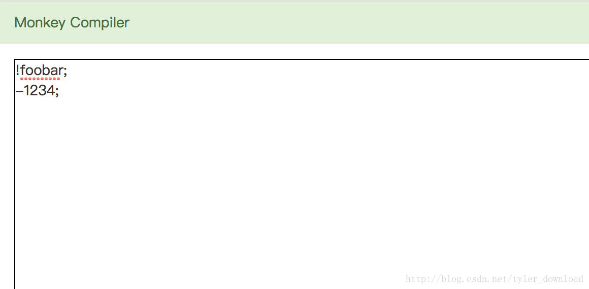
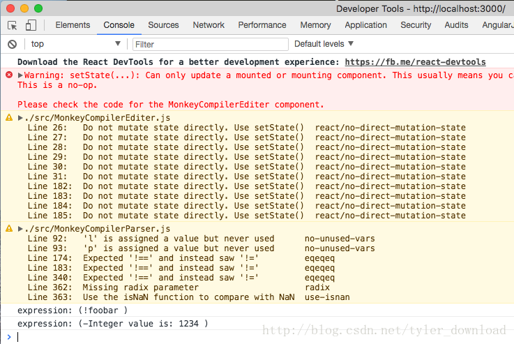
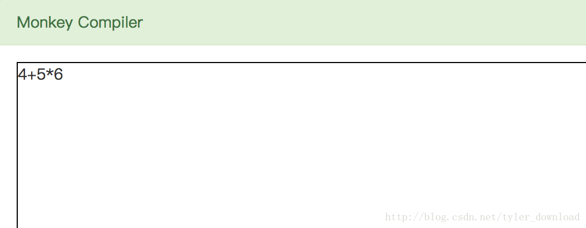
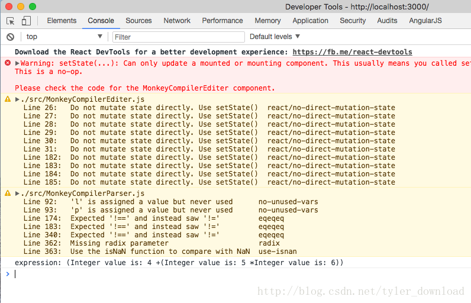

!3*-5+(add(6,7)/foobar);上面是一个很复杂的表达式，它的解析涉及到操作符优先级，例如乘法比加法优先级高，但括号优先级又比乘法优先级高，于此同时，在解析时，编译器需要把-和5结合解读成”-5”后才能参与运算，并且编译器要知道，add(6,7)是一个函数调用，它需要执行add(6,7),获得函数运行后返回值才能继续参与算术表达式的运算。
算术表达式解析时要考虑的因素之多，使得它成为了编译原理中有关语法解析这部分的重点和难点，理解了算术表达式的解析算法，不但能执编译原理牛耳，而且解析算法的设计和实现充分展示了计算机科学中“分而治之”和“递归”的精妙核心原则。
编译原理一大难点在于，它蕴含很多抽象的概念，而很多复杂算法的设计和实现有赖于对这些抽象概念的理解和把握，一方面概念的抽象性已经让人头大，再加上算法的复杂性，这就使得编译原理难上加难，让人望而却步。好在普拉特解析法有别与传统的编译原理语法解析算法，它简单，精致，易理解，我们看看普拉特解析法是如何巧妙的解决上面复杂算术表达式的解析的。
前序表达式的解析
在上面复杂的算术表达式中，有这样的组成部分：
!3 和 -5
这种成分的特点是，有一个操作符放在数字的前面，在运算整个算术式子时，需要先执行上面这些运算后，所得结果才能参与到整个算术式的运算中，我们把这种算术式成为前序表达式。我们看看普拉特解析法是如何解析上面的式子的，原理我们先不分析，先直接从代码实现开始。在MonkeyCompilerParser.js中，添加下面代码：
class PrefixExpression extends Expression {
constructor(props) {
super(props)
this.token = props.token
this.operator = props.operator
this.right = props.expression
var s = "(" + this.operator + this.right.getLiteral() + " )"
this.tokenLiteral = s
}
}上面代码定义的类就用来表示前序表达式，其中的operator就是表达式中的操作符，this.right对应的就是操作符后面的成分。接着我们在解析表中增加对前序表达式的解析函数：
class MonkeyCompilerParser {
constructor(lexer) {
....
this.prefixParseFns[this.lexer.BANG_SIGN] =
this.parsePrefixExpression
this.prefixParseFns[this.lexer.MINUS_SIGN] =
this.parsePrefixExpression
....
}
....
}this.lexer.BANG_SIGN 对应的就是表达式中的符号”!”,它表示做取反操作，this.lexer.MINUS_SIGN 对应表达式中的”-“，它表示做取负操作。上面代码表示，一旦语法解析器解析到符号”!”和”-“时，解析器便调用parsePrefixExpression函数进行处理，我们看看它的实现：
parsePrefixExpression(caller) {
var props = {}
props.token = caller.curToken
props.operator = caller.curToken.getLiteral()
caller.nextToken()
props.expression = caller.parseExpression(caller.PREFIX)
return new PrefixExpression(props)
}解析函数在执行时，先记录前序操作符，也就是caller.curToken，这个变量对应的token其实就是符号”!”或者”-“。然后调用nextToken()把读取下一个token，在前序操作符后面跟着的是一个算术表达式，所以直接调用parseExpression进行解析就可以，当前我们把算术表达式简化为数字字符串或变量字符串，所以现在我们的解析器只支持”!”或”-“后面跟着一个数组或变量。
在这里我们需要注意到一个定义上的循环重复。前序表达式是算术表达式的一部分，也就是后者包含了前者。然后前序表达式在去掉前序操作符后，接着的确是一个算术表达式，也就是说前序表达式包含了算术表达式，这就形成一个概念定义上的反复包含，我包含你与此同时你又包含我，这种成分的互相包含性是编译原理理解起来的难点所在。
上面代码完成后，我们在编辑框中输入前序表达式进行解析：

点击下方的parsing按钮后，在控制台里可以看到解析结果：

于是，添加上面代码后，语法解析去就能接受并理解前序表达式。
中序表达式
前序表达式的操作符在操作数的前面，对应的中序表达式意味着操作符在操作数的中间，例如：
3+5；
2*3;
3*!foobar
4+5*6上面的式子中，操作符两边各有一个操作数，第三个表达式，操作符”*”右边甚至还包含了一个前序表达式。在解析中序表达式时，还得注意运算符的优先级，例如第4个表达式需要先做乘法再做加法，也就是说后半部分”5*6”需要当做一个整体看待。
我们先在代码中定义符号的优先级和配置中序表达式的解析函数表：
class MonkeyCompilerParser {
constructor(lexer) {
...
this.initPrecedencesMap()
this.registerInfixMap()
}
initPrecedencesMap() {
this.precedencesMap = {}
this.precedencesMap[this.lexer.EQ] = this.EQUALS
this.precedencesMap[this.lexer.NOT_EQ] = this.EQUALS
this.precedencesMap[this.lexer.LT] = this.LESSGREATER
this.precedencesMap[this.lexer.GT] = this.LESSGREATER
this.precedencesMap[this.lexer.PLUS_SIGN] = this.SUM
this.precedencesMap[this.lexer.MINUS_SIGN] = this.SUM
this.precedencesMap[this.lexer.SLASH] = this.PRODUCT
this.precedencesMap[this.lexer.ASTERISK] = this.PRODUCT
this.precedencesMap[this.lexer.LEFT_PARENT] = this.CALL
}
peekPrecedence() {
var p = this.precedencesMap[this.peekToken.getType()]
if (p != undefined) {
return p
}
return this.LOWEST
}
curPrecedence() {
var p = this.precedencesMap[this.curToken.getType()]
if (p != undefined) {
return p
}
return this.LOWEST
}
registerInfixMap() {
this.infixParseFns = {}
this.infixParseFns[this.lexer.PLUS_SIGN] =
this.parseInfixExpression
this.infixParseFns[this.lexer.MINUS_SIGN] =
this.parseInfixExpression
this.infixParseFns[this.lexer.SLASH] =
this.parseInfixExpression
this.infixParseFns[this.lexer.ASTERISK] =
this.parseInfixExpression
this.infixParseFns[this.lexer.EQ] =
this.parseInfixExpression
this.infixParseFns[this.lexer.NOT_EQ] =
this.parseInfixExpression
this.infixParseFns[this.lexer.LT] =
this.parseInfixExpression
this.infixParseFns[this.lexer.GT] =
this.parseInfixExpression
}函数initPrecedenceMap用来把操作符的优先级设置到一个哈希表中，当解析器读取到不同的操作符时，它就根据当前读到的操作符到表里面查找对应的优先级，根据不同优先级采取不同操作。像前序分析一样，在解析中序表达式时，我们也配置一个解析调用表，当解读到中序操作符时，例如读取到符号“*， + ， -， ！=， <, >”时，解析器拿着这些符号到解析表infixParseFns去获取一个解析函数，然后直接执行。我们再看看这个函数的实现：
parseInfixExpression(caller, left) {
var props = {}
props.leftExpression = left
props.token = caller.curToken
props.operator = caller.curToken.getLiteral()
var precedence = caller.curPrecedence()
caller.nextToken()
props.rightExpression = caller.parseExpression(precedence)
return new InfixExpression(props)
}上面的函数调用时，需要传入一个参数叫left,可以猜测，这个left就是操作符左边部分，而right对应的就是右边部分，对于表达式”2+3”,上面代码中的leftExpression对应的就是表达式”2”,代码中的rightExpression对应加号后面的表达式”3”。
接着我们看看解析流程的改变：
parseExpression(precedence) {
var prefix = this.prefixParseFns[this.curToken.getType()]
if (prefix === null) {
console.log("no parsing function found for token " +
this.curToken.getLiteral())
return null
}
var leftExp = prefix(this)
if (this.peekTokenIs(this.lexer.SEMICOLON) != true &&
precedence < this.peekPrecedence()) {
var infix = this.infixParseFns[this.peekToken.getType()]
if (infix === null) {
return leftExp
}
this.nextToken()
leftExp = infix(this, leftExp)
}
return leftExp
}parseExpression被调用来解析解析表达式时，它先从前序解析表中，用当前读取的token查找一个解析函数来解析表达式的前半部分，此时符号的优先级开始发挥作用，例如表达式”4+5*6”，在解析时，”4”会先解析，解析后对应的就是leftExp，由于4后面跟着+而不是分号，因此会进入if部分，此时当前的token对应的就是符号”+”，于是在中序解析表中，用符号”+”找到一个解析函数，也就是函数parseInfixExpression,然后执行它，并且把加号左边的表达式”4”当做参数传入，在parseInfixExpression中，它先在符号优先级表中查找加号的优先级，并把优先级当做参数，再次调用parseExpression来解析加号后面的表达式。
在执行parseExpression时，它会把乘号左边的5解析成一个表达式，也就对应变量leftExp。此时5后面跟着的不是分号而是乘号，代码调用peekPrecedence()在操作符优先级表中查找乘号的优先级，然后跟传进来的加号优先级比较，乘号的优先级肯定比加号优先级大，于是进入if部分，接着从中序表达式解析表中找到解析函数parseInfixExpression，执行它后，把乘号后面的数字6解析成一个表达式。注意到，此时代码在调用parseInfixExpression时，把leftExp当做参数传入，而leftExp对应的是表达式5，于是表达式”5”加上符号”*”以及表达式”6”就被结合成一个整体，这就跟算术法则保持一致，也就是解析器会先处理”5*6”,再把所得结果与前面的表达式”4”做加法运算。
当完成上面代码后，在编辑框中输入以下内容：

点击解析后，在控制台中输出结果如下：

我们看到，在解析结果中，”5*6”确实是组合成一个整体来被解读的。本文只讲解了代码的设计和运行逻辑，他们的理解需要结合调试演示才好深入理解，请点击下面的链接观看讲解视频：
下一节我们将深入探讨普拉特解析法的算法原理，并证明为什么普拉特解析法是行之有效的语法解析算法。
更多技术信息，包括操作系统，编译器，面试算法，机器学习，人工智能，请关照我的公众号：